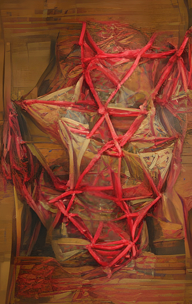
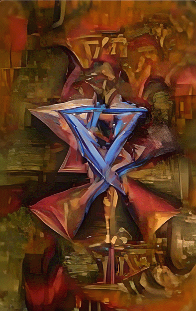
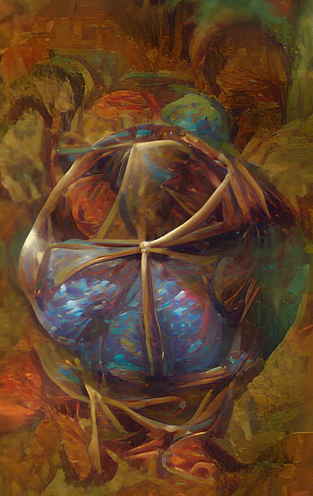
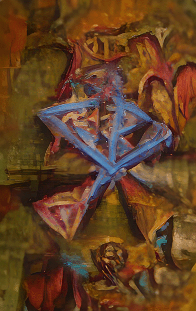

Emipire State Building
via (AI) Artificial Intelligence
06/21/2022
Click image to access (AI) Artificial Intelligence Portrait and Places gallery

Joe Biden
via (AI) Artificial Intelligence
06/22/2022
Click image to access (AI) Artificial Intelligence portrait and places gallery

Franklin D. Roosevelt
via (AI) Artificial Intelligence
06/23/2022
Click image to access (AI) Artificial Intelligence portrait and places gallery

Albert Einstein
via (AI) Artificial Intelligence
06/24/2022
Click image to access (AI) Artificial Intelligence portrait and places gallery

George Washington
via (AI) Artificial Intelligence
06/25/2022
Click image to access (AI) Artificial Intelligence portrait and places gallery

Henry Kissinger
via (AI) Artificial Intelligence
06/26/2022
Click image to access (AI) Artificial Intelligence portrait and places gallery

Tantrums 01 
via (AI) Artificial Intelligence
06/27/2022
Click image to access (AI) Artificial Intelligence Tantrum gallery
Tantrum 02 
via (AI) Artificial Intelligence
06/28/2022
Click image to access (AI) Artificial Intelligence Tantrum gallery
Tantrum 03 
via (AI) Artificial Intelligence
06/28/2022
Click image to access (AI) Artificial Intelligence Tantrum gallery
Tantrum 04 
via (AI) Artificial Intelligence
06/29/2022
Click image to access (AI) Artificial Intelligence Tantrum gallery
Tantrum 05
via (AI) Artificial Intelligence
06/30/2022
Click image to access (AI) Artificial Intelligence Tantrum gallery